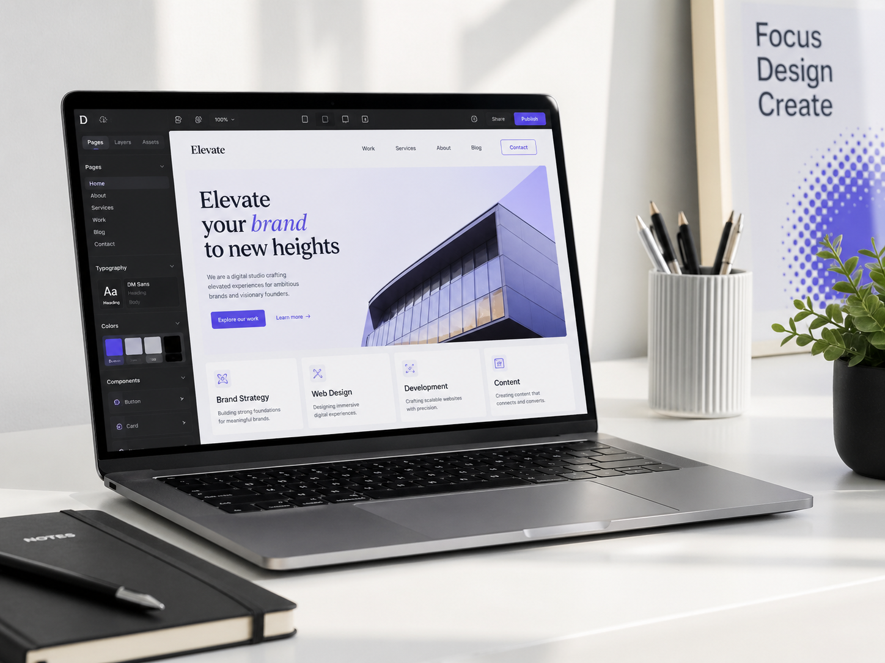

01
Design web professionnel
Nous créons des interfaces modernes, élégantes et cohérentes avec l’image de votre entreprise. Chaque section est pensée pour inspirer confiance, mettre en valeur vos services et guider vos visiteurs naturellement vers une prise de contact. L’objectif n’est pas seulement d’avoir un beau site, mais d’avoir une présence en ligne crédible, claire et professionnelle dès les premières secondes.
